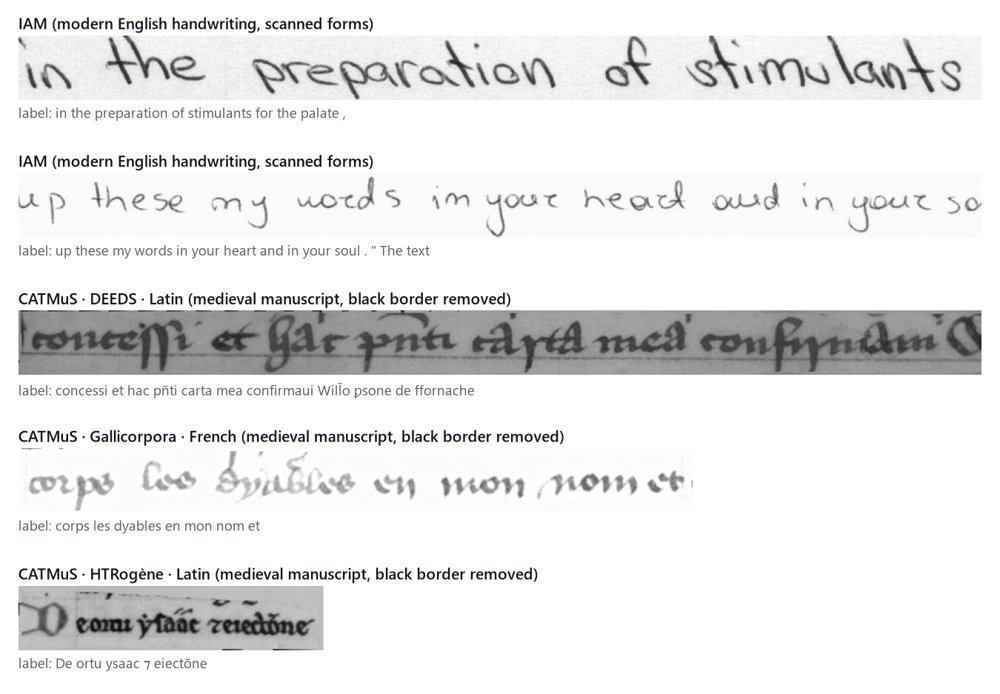
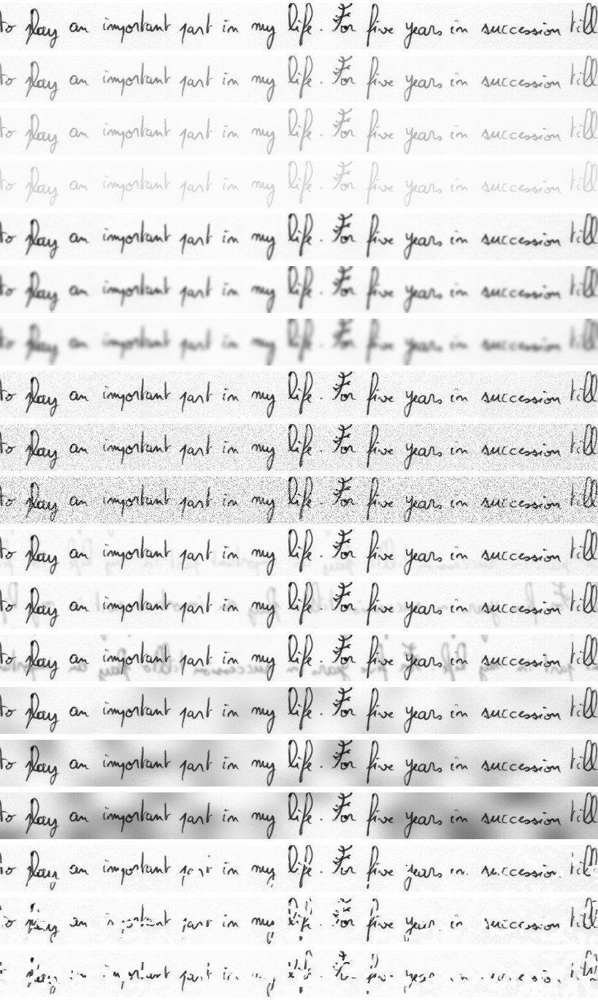
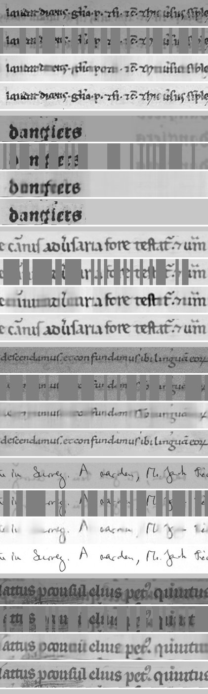
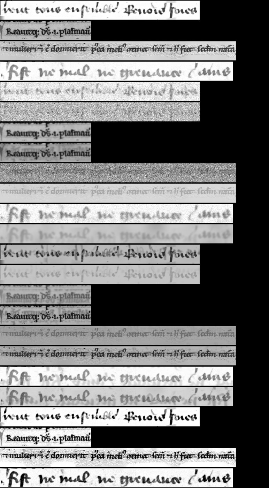
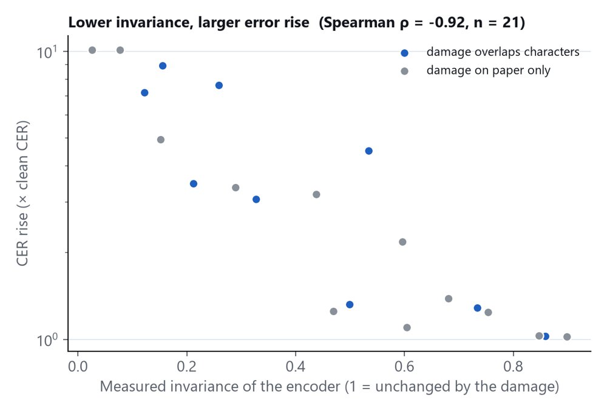

<title>Learning What to Ignore</title>
<meta name="claude:viewport-fit-sides" content="cover">
<style>
/* Layout: one reading column, plain report look; diagrams, charts and real figures carry the story. */
:root{
  --bg:#f7f9fb; --surface:#ffffff; --fg:#17212b; --muted:#5a6773; --line:#d9e1e8; --grid:#e8edf2;
  --accent:#1f6fc4; --accent-soft:#e6f0fa; --dot:#8a97a3; --good:#1d7a4a; --good-soft:#e5f4ec; --risk:#b3261e; --risk-soft:#fbeceb;
  --sans:"Segoe UI",system-ui,-apple-system,"Helvetica Neue",Arial,sans-serif;
  --mono:Consolas,"SFMono-Regular",Menlo,monospace;
}
@media (prefers-color-scheme: dark){:root:not([data-theme="light"]){
  --bg:#11161c; --surface:#18202a; --fg:#e4eaf0; --muted:#9aa8b5; --line:#2b3642; --grid:#222c37;
  --accent:#6aacf0; --accent-soft:#1b2b3d; --dot:#7c8a97; --good:#5cc48d; --good-soft:#163024; --risk:#f08a82; --risk-soft:#3a1d1b; color-scheme:dark}}
:root[data-theme="dark"]{
  --bg:#11161c; --surface:#18202a; --fg:#e4eaf0; --muted:#9aa8b5; --line:#2b3642; --grid:#222c37;
  --accent:#6aacf0; --accent-soft:#1b2b3d; --dot:#7c8a97; --good:#5cc48d; --good-soft:#163024; --risk:#f08a82; --risk-soft:#3a1d1b; color-scheme:dark}
body{background:var(--bg);color:var(--fg);font-family:var(--sans);font-size:16px;line-height:1.6;
  padding-left:max(16px,env(safe-area-inset-left,0px));padding-right:max(16px,env(safe-area-inset-right,0px));padding-block:32px 64px}
main{max-width:820px;margin:0 auto;display:flex;flex-direction:column;gap:44px}
h1{font-size:2rem;line-height:1.2;margin:0 0 8px;text-wrap:balance}
h2{font-size:1.35rem;margin:0 0 12px;text-wrap:balance}
h3{font-size:1.05rem;margin:22px 0 8px}
p{margin:0 0 12px;max-width:70ch} ul{margin:0 0 12px;padding-left:22px} li{margin-bottom:6px}
.lede{color:var(--muted);font-size:1.05rem}
.meta,figcaption{font-size:.85rem;color:var(--muted)}
code{font-family:var(--mono);font-size:.9em}
.tbl{overflow-x:auto;margin:8px 0 12px}
table{border-collapse:collapse;width:100%;font-variant-numeric:tabular-nums;font-size:.94rem;background:var(--surface)}
th,td{border-bottom:1px solid var(--line);padding:8px 10px;text-align:left;vertical-align:top}
th{font-weight:600;color:var(--muted);font-size:.8rem;letter-spacing:.03em;text-transform:uppercase}
td.n{text-align:right;font-family:var(--mono)}
tr.win td{background:var(--good-soft)} tr.dead td{color:var(--muted)}
.box{border-left:4px solid var(--accent);background:var(--accent-soft);padding:12px 16px;border-radius:4px}
.box.risk{border-color:var(--risk);background:var(--risk-soft)}
.box.good{border-color:var(--good);background:var(--good-soft)}
.box p:last-child,.box ul:last-child{margin-bottom:0}
.pill{display:inline-block;font-size:.78rem;font-weight:600;padding:1px 8px;border-radius:10px;font-family:var(--mono)}
.pass{background:var(--good-soft);color:var(--good)} .fail{background:var(--risk-soft);color:var(--risk)} .pend{background:var(--accent-soft);color:var(--accent)}
figure{margin:12px 0;display:flex;flex-direction:column;gap:6px}
figure img{border:1px solid var(--line);border-radius:4px;background:#fff;display:block;max-width:100%;height:auto}
.scroll-img{max-height:520px;overflow:auto;border:1px solid var(--line);border-radius:4px}
.scroll-img img{border:0;border-radius:0}
.diagram{background:var(--surface);border:1px solid var(--line);border-radius:6px;padding:12px;overflow-x:auto}
.diagram pre.mermaid{margin:0;background:transparent}
.models{display:grid;grid-template-columns:repeat(auto-fit,minmax(340px,1fr));gap:14px}
.model{background:var(--surface);border:1px solid var(--line);border-radius:6px;padding:14px;display:flex;flex-direction:column;gap:8px;min-width:0}
.model h3{margin:0}
.model .tag{font-size:.78rem;font-family:var(--mono);color:var(--muted)}
.model pre.mermaid{margin:0;overflow-x:auto}
.charts{display:grid;grid-template-columns:repeat(auto-fit,minmax(340px,1fr));gap:14px}
.chart{background:var(--surface);border:1px solid var(--line);border-radius:6px;padding:12px 14px;min-width:0}
.chart h4{margin:0 0 2px;font-size:.95rem}
.chart .sub{margin:0 0 6px;font-size:.8rem;color:var(--muted)}
.chart svg{width:100%;height:auto;display:block;overflow:visible}
.chart svg text{font-family:var(--sans);fill:var(--fg)}
.chart svg .axis{fill:var(--muted);font-size:11px}
.chart svg .lab{font-size:12.5px}
.chart svg .val{font-size:11.5px;font-family:var(--mono);fill:var(--muted)}
.chart svg .val.hl{fill:var(--accent);font-weight:600}
.chart svg .gl{stroke:var(--grid);stroke-width:1}
.chart svg .rg{stroke:var(--dot);stroke-width:2;stroke-linecap:round}
.chart svg .rg.hl{stroke:var(--accent)}
.chart svg .dt{fill:var(--dot);stroke:var(--surface);stroke-width:2}
.chart svg .dt.hl{fill:var(--accent)}
.chart svg .hit{fill:transparent}
.ladder{display:grid;gap:10px}
.step{display:grid;grid-template-columns:56px 1fr;gap:12px;background:var(--surface);border:1px solid var(--line);border-radius:6px;padding:12px}
.step b.k{font-family:var(--mono);color:var(--accent)} .step div{min-width:0}
dl{display:grid;grid-template-columns:max-content 1fr;gap:6px 16px;margin:0}
dt{font-weight:600} dd{margin:0}
@media (max-width:520px){dl{grid-template-columns:1fr} dd{margin-bottom:8px} .models,.charts{grid-template-columns:1fr}}
a{color:var(--accent)}
.net{background:var(--surface);border:1px solid var(--line);border-radius:6px;padding:14px;margin:0 0 16px}
.net h3{margin:0 0 6px}
.net .svgwrap{overflow-x:auto}
.net svg{display:block;min-width:620px;width:100%;height:auto}
.net svg text{font-family:var(--sans);fill:var(--fg)}
.net svg .nm{font-size:13px;font-weight:600}
.net svg .sb{font-size:11px;fill:var(--muted)}
.net svg .ed{stroke:var(--line);stroke-width:1}
.net svg .nd{fill:var(--accent-soft);stroke:var(--accent);stroke-width:1.5}
.net svg .nd.in{fill:var(--surface);stroke:var(--muted)}
.net svg .nd.hid{fill:var(--surface);stroke:var(--muted);stroke-dasharray:3 3}
.net svg .nd.out{fill:var(--accent);stroke:var(--accent)}
.net svg .ls{fill:var(--risk-soft);stroke:var(--risk);stroke-width:1.5}
.net svg .bx{fill:var(--accent-soft);stroke:var(--accent);stroke-width:1.5}
.net svg .lp{fill:none;stroke:var(--accent);stroke-width:1.2}
.net svg .bd{fill:var(--fg)} .net svg .bt{fill:var(--bg);font-size:11px;font-weight:700}
.net svg .dots{font-size:16px;fill:var(--muted)}
.net ol{margin:10px 0 0;padding-left:0;list-style:none;display:grid;gap:6px}
.net li{display:grid;grid-template-columns:24px 1fr;gap:8px;margin:0}
.net li .k{display:inline-grid;place-items:center;width:20px;height:20px;border-radius:50%;background:var(--fg);color:var(--bg);font-size:11px;font-weight:700;margin-top:2px}
.net li div{min-width:0}
.f{font-family:var(--mono);font-size:.9rem;background:var(--accent-soft);padding:2px 6px;border-radius:3px;display:inline-block;max-width:100%;overflow-x:auto;white-space:nowrap;vertical-align:top}
.formcards{display:grid;grid-template-columns:repeat(auto-fit,minmax(320px,1fr));gap:14px}
.formcard{background:var(--surface);border:1px solid var(--line);border-radius:6px;padding:14px;min-width:0}
.formcard h3{margin:0 0 8px}
.formcard p{margin:0 0 8px}
@media (max-width:520px){.formcards{grid-template-columns:1fr}}
</style>

<main>
<header>
  <p class="meta">Team 147 · Capstone Phase 1 · state on 16 Nov 2026</p>
  <h1>Learning What to Ignore</h1>
  <p class="lede">What we set out to test, every model we ran, why the first test said "no", and what the second test found. For the team and the reviewers.</p>
</header>

<section>
  <h2>The question in one paragraph</h2>
  <p>A text recogniser reads a line image and outputs characters. Old manuscripts are damaged: the paper turns brown, ink fades, writing from the other side shows through, there are stains and blur. A good recogniser should <em>ignore</em> the damage and keep the letters. Usually people pick the damage to train on by hand. Our idea: <strong>measure</strong> the damage in real old manuscripts and train on exactly that damage. Then check whether the model learns to ignore it, and whether how much it ignores predicts how well it reads damaged lines.</p>
  <dl>
    <dt>IAM</dt><dd>Clean modern English handwriting. Our "clean" source.</dd>
    <dt>CATMuS</dt><dd>Real medieval Latin and French manuscripts. Our "real damage" target. Its test set comes from other manuscripts than training.</dd>
    <dt>CER</dt><dd>Character error rate. Lower is better. 20% means 1 in 5 characters is wrong.</dd>
    <dt>Recipe</dt><dd>A list of damage types with how often and how strong. <em>Hand-picked</em> = the usual guess. <em>Derived</em> = fitted to measurements of CATMuS.</dd>
    <dt>Seed</dt><dd>One repeat of a run with different randomness. We run 2–3 seeds so we can tell real differences from luck.</dd>
  </dl>
  <figure>
    
    <figcaption>What the two datasets look like: clean IAM lines and real CATMuS manuscript lines.</figcaption>
  </figure>
</section>

<section>
  <h2>The whole project on one page</h2>
  <div class="diagram">
<pre class="mermaid">
flowchart LR
  A["CATMuS lines<br/>(real damage)"] --> B["Measure each line<br/>paper tone, contrast,<br/>show-through, blur, noise"]
  C["IAM lines<br/>(clean)"] --> B
  B --> D["Derived recipe<br/>how often + how strong<br/>each damage type is"]
  H["Hand-picked recipe<br/>(the usual guess)"] --> E
  D --> E{"Use the recipe for"}
  E -->|"Test 1"| F["Pretraining<br/>(ConvMAE)"]
  E -->|"Test 2"| G["Training augmentation"]
  F --> R["CRNN recogniser"]
  G --> R
  R --> M["Score: CER on clean lines,<br/>synthetic damage,<br/>and the most damaged real lines"]
  R --> I["Invariance: how much the<br/>features change under damage"]
</pre>
  </div>
</section>

<section>
  <h2>The damage we simulate</h2>
  <p>Seven damage types, each at three strengths: paper tone, fade, blur, noise, show-through, stain and ink loss. Ink loss is never used in training. We keep it back as an "unseen damage" test.</p>
  <figure>
    <div class="scroll-img"></div>
    <figcaption>One IAM line under each damage type, getting stronger down the page (scroll inside the box).</figcaption>
  </figure>
</section>

<section>
  <h2>Every model we ran</h2>
  <p>56 training runs in total, plus one off-the-shelf reference. All on one laptop GPU (RTX 4060, 8 GB).</p>
  <div class="tbl"><table>
    <tr><th>Model</th><th>What it is</th><th>Runs</th><th>Status</th></tr>
    <tr><td>PaddleOCR PP-OCRv6</td><td>Industry OCR, used as is (no training)</td><td class="n">–</td><td>Reference: 11.4% IAM, 52.5% CATMuS</td></tr>
    <tr><td>CRNN, scratch</td><td>Our recogniser, no pretraining, no augmentation</td><td class="n">10</td><td>Baseline</td></tr>
    <tr class="dead"><td>Small ViT (+ MAE)</td><td>Transformer recogniser, 6.5M parameters</td><td class="n">10</td><td>Dropped: memorised the few labels (60–77% CER)</td></tr>
    <tr><td>CRNN + ConvMAE</td><td>CNN pretrained by rebuilding lines; 3 recipes</td><td class="n">18</td><td>Test 1: no gain</td></tr>
    <tr><td>CRNN + damage augmentation</td><td>Training lines damaged on the fly; 2 recipes</td><td class="n">12</td><td>Test 2: gain on CATMuS</td></tr>
    <tr><td>CRNN + background normalisation</td><td>Plain clean-up filter, no learning</td><td class="n">6</td><td>Control</td></tr>
  </table></div>

  <div class="models">
    <div class="model">
      <h3>CRNN (the recogniser)</h3>
      <span class="tag">7.4M parameters · used in every result</span>
<pre class="mermaid">
flowchart LR
  X["Line image<br/>64 × W px"] --> C["CNN<br/>7 conv blocks"]
  C --> F["Feature sequence<br/>384 × W/4"]
  F --> L["BiLSTM<br/>2 layers"]
  L --> O["Letter scores<br/>per column"]
  O --> T["CTC → text"]
</pre>
      <p class="meta">The CNN looks at the image, the BiLSTM reads left to right and back, CTC turns column scores into a string.</p>
    </div>

    <div class="model">
      <h3>ConvMAE pretraining (Test 1)</h3>
      <span class="tag">no labels needed · 30k lines · 34 min</span>
<pre class="mermaid">
flowchart LR
  X["Clean line"] --> D["Add recipe damage"]
  D --> K["Hide 60% of<br/>8-px strips"]
  K --> C["Same CNN<br/>as the CRNN"]
  C --> R["Small decoder"]
  R --> P["Rebuild the<br/>clean line"]
  P -.->|"error vs clean"| C
</pre>
      <p class="meta">The CNN learns by repairing damaged, half-hidden lines. Then it is copied into a CRNN and fine-tuned with labels.</p>
    </div>

    <div class="model">
      <h3>Damage augmentation (Test 2)</h3>
      <span class="tag">labels only · no pretraining</span>
<pre class="mermaid">
flowchart LR
  X["Labelled<br/>training line"] --> D["Add recipe damage<br/>new draw every epoch"]
  D --> R["CRNN"]
  R --> Y["Predicted text"]
  Y -.->|"CTC loss vs<br/>true text"| R
</pre>
      <p class="meta">The model must read the true text through the damage. Validation and test lines are never damaged by us.</p>
    </div>

    <div class="model">
      <h3>Small ViT (dropped)</h3>
      <span class="tag">6.5M parameters · 10 runs · kept as a record</span>
<pre class="mermaid">
flowchart LR
  X["Line image"] --> P["Cut into<br/>vertical strips"]
  P --> T["Transformer<br/>encoder"]
  T --> H["Linear or<br/>BiLSTM head"]
  H --> Y["CTC → text"]
</pre>
      <p class="meta">With only 65–1,188 labelled lines it learned them by heart (training loss near 0, test CER 60–77%). Pretraining helped it, but it stayed far behind the CRNN.</p>
    </div>
  </div>
</section>

<section>
  <h2>Inside the networks</h2>
  <p>The same models drawn as neural networks. Circles are units (a few stand for hundreds), lines are learned weights, and each numbered layer has its formula underneath. The pictures are schematic: a real CNN connects only nearby pixels, not everything to everything.</p>

  <div class="net" data-net="crnn"><h3>CRNN: image → text</h3></div>
  <div class="net" data-net="aug"><h3>Test 2: training with damage augmentation</h3></div>
  <div class="net" data-net="mae"><h3>Test 1: ConvMAE pretraining (no labels)</h3></div>
  <div class="net" data-net="vit"><h3>Small ViT (dropped)</h3></div>

  <div class="formcards">
    <div class="formcard">
      <h3>How "invariance" is measured</h3>
      <p class="f">inv = mean over lines of cos( ẑ(x), ẑ(D(x)) )</p>
      <p>Feed the same line in clean (x) and damaged (D(x)). ẑ is the CNN's feature vector averaged over the line and standardised. Cosine 1 means the damage changed nothing inside the model.</p>
    </div>
    <div class="formcard">
      <h3>Planned for Phase 2 (E2): consistency</h3>
      <p class="f">L = CTC(f(x<sub>lab</sub>), y) + λ · KL( p(x<sub>unl</sub>) ‖ p(D(x<sub>unl</sub>)) )</p>
      <p>The first term is ordinary training on labelled lines. The second needs no labels: the letter probabilities for a clean unlabelled line and its damaged copy should match. The recipe D decides what the model learns to ignore.</p>
    </div>
  </div>
</section>

<section>
  <h2>Test 1 (9–10 Nov): pretraining. It did not help.</h2>
  <figure>
    <div class="scroll-img"></div>
    <figcaption>The pretraining task, for six lines: damaged input, input with strips hidden, the model's reconstruction, and the clean target. It learns to fill gaps well, which turned out not to be what reading needs.</figcaption>
  </figure>
  <div class="charts">
    <div class="chart" data-chart="p_catmus"><h4>CATMuS, 5% labels</h4><p class="sub">Test CER %, mean of 2 seeds, bar = seed range</p></div>
    <div class="chart" data-chart="p_iam"><h4>IAM, 10% labels</h4><p class="sub">Test CER %, mean of 2 seeds, bar = seed range</p></div>
  </div>
  <p>Every pretrained model lands on top of the no-pretraining baseline or slightly worse. The pre-registered check <span class="pill fail">A3 FAIL</span>.</p>
  <h3>Why that test could not really show the idea</h3>
  <ul>
    <li><strong>Too little data.</strong> 30k lines for 34 minutes. Papers that gain from pretraining use 10–50 million lines.</li>
    <li><strong>Wrong yardstick.</strong> It was judged on clean CER, but the idea is about damaged lines.</li>
    <li><strong>The pretrained start was washed out.</strong> Fine-tuning ran long at full learning rate.</li>
    <li><strong>Small task.</strong> Filling 8-pixel gaps teaches texture, which normal training learns in minutes anyway.</li>
  </ul>
  <p>So the result says "this kind of pretraining does not help at this scale", which matches a published study (Kišš &amp; Hradiš, 2024). It does not say the idea is useless.</p>
</section>

<section>
  <h2>Test 2 (16 Nov): the same damage as augmentation. It helps on real lines.</h2>
  <figure>
    <div class="scroll-img"></div>
    <figcaption>Four CATMuS training lines, top to bottom: clean; hand-picked damage (two different epochs); derived damage (two epochs); background normalisation. Hand-picked damage is heavier and noisier; derived damage stays closer to what real pages look like.</figcaption>
  </figure>
  <div class="charts">
    <div class="chart" data-chart="e_all"><h4>CATMuS, all test lines</h4><p class="sub">Test CER %, mean of 3 seeds</p></div>
    <div class="chart" data-chart="e_contrast"><h4>CATMuS, lowest-contrast quarter</h4><p class="sub">The faintest real lines</p></div>
    <div class="chart" data-chart="e_paper"><h4>CATMuS, darkest-paper quarter</h4><p class="sub">Most browned real pages</p></div>
    <div class="chart" data-chart="e_mid"><h4>CATMuS, most show-through quarter</h4><p class="sub">Writing from the back visible</p></div>
    <div class="chart" data-chart="e_iam"><h4>IAM, 10% labels, clean test</h4><p class="sub">The clean dataset</p></div>
  </div>
  <div class="box good" style="margin-top:14px">
    <p><strong>What this shows.</strong> On real manuscripts, damage fitted to measurements beats no damage by about 2.2 points, the hand-picked guess by about 2 points, and a plain clean-up filter by about 1.4 points, with seed ranges of about ±0.5. Pre-registered checks: <span class="pill pass">B1</span> <span class="pill pass">B3</span> <span class="pill pass">B4</span> <span class="pill pass">B5</span> pass, <span class="pill pend">B2</span> pending.</p>
  </div>
  <p class="meta" style="margin-top:8px">"Quarter" = the most damaged 25% of CATMuS test lines by that measurement, within each manuscript project. Source: <code>results/pilot_summary.md</code>, section E1/E0b.</p>
</section>

<section>
  <h2>Robustness to synthetic damage, and the catch</h2>
  <div class="charts">
    <div class="chart" data-chart="r_six"><h4>IAM, damage types used in training</h4><p class="sub">Mean CER % over 6 types, medium strength</p></div>
    <div class="chart" data-chart="r_ink"><h4>IAM, ink loss (never trained on)</h4><p class="sub">CER %, medium strength</p></div>
  </div>
  <p>The left chart looks dramatic, but it is partly circular: those models trained on the very damage types they are tested on. The right chart is the fair test. On damage no recipe contained, augmentation still helps, but less. Here the hand-picked recipe does better than the derived one.</p>
</section>

<section>
  <h2>What this does not show (say this in the review)</h2>
  <div class="box risk"><ul>
    <li><strong>The big IAM number is partly circular</strong> (see the chart above). The fair check is ink loss: the CER ratio drops from ×3.82 to ×3.59 (derived) and ×3.27 (hand-picked).</li>
    <li><strong>The gain is not specific to damaged lines.</strong> On CATMuS the gain on the worst quarters (about 2.4–2.8 points) is about the same as on all lines (2.2). We can say "derived damage helps on CATMuS", not yet "it helps most where damage is worst".</li>
    <li><strong>Hand-picked wins on IAM, derived wins on CATMuS.</strong> That fits the idea (derived matters when damage is real and large), but it is one dataset pair.</li>
    <li><strong>3 seeds, one pair of datasets.</strong> Enough for a review, not yet for a paper.</li>
  </ul></div>
</section>

<section>
  <h2>The invariance result (RQ3) survived a check</h2>
  <p>For each damage type we measure how much the model's internal features change when the damage is added ("invariance": 1 = no change). Damage types the model ignores more raise the CER less: Spearman ρ ≈ −0.9 in every model.</p>
  <figure>
    
    <figcaption>Each point is one damage type at one strength. Higher invariance (right) goes with a smaller rise in CER.</figcaption>
  </figure>
  <p>The obvious objection: stronger damage changes both the pixels and the features, so the link might be trivial. In the 9 pilot models (scratch and pretrained) we removed plain pixel change first and the link stays: partial ρ ≈ −0.80, p ≤ 0.01 in all 9.</p>
  <div class="box risk"><p><strong>But it weakens in the newer models.</strong> In the 6 models trained with damage augmentation, invariance barely predicts the CER rise (ρ ≈ −0.2 to −0.4, not significant). In the background-normalisation models, pixel change explains almost all of it. A likely reason: augmented models are hardly hurt by the damage they trained on, so there is little CER rise left to predict. Over all 19 models the partial ρ is −0.53. So RQ3 is promising for ordinary models, and still open for models that have learned to ignore the damage. Source: <code>results/tables/pixel_control.md</code>.</p></div>
</section>

<section>
  <h2>What is new, and what is not</h2>
  <p>Estimating damage parameters from real scans is old work (Kanungo, Baird and others, 1994–2007, for printed-text OCR). We cite it. Our new part:</p>
  <ul>
    <li>using measured damage to decide what a <em>deep</em> recogniser should learn to ignore;</li>
    <li>the chain recipe → learned invariance → robustness, tested on real damaged lines;</li>
    <li>the comparison against the hand-picked recipes everyone uses (the recent NeurIPS 2026 study used "mild", unspecified augmentation).</li>
  </ul>
</section>

<section>
  <h2>Plan from here</h2>
  <div class="ladder">
    <div class="step"><b class="k">E1</b><div><strong>Damage as augmentation.</strong> Done, positive on CATMuS. Next: 5 seeds, more label budgets.</div></div>
    <div class="step"><b class="k">E2</b><div><strong>Consistency training on unlabelled lines.</strong> The main Phase-2 method: show the model a clean and a damaged copy of the same unlabelled line and train it to read both the same way. This uses the unlabelled data that pretraining failed to use.</div></div>
    <div class="step"><b class="k">E3</b><div><strong>One bounded pretraining rescue.</strong> Better fine-tuning settings, 10× more unlabelled lines on Kaggle, a public pretrained encoder. Fixed decision date. If it fails, it is reported as a negative result.</div></div>
    <div class="step"><b class="k">E4</b><div><strong>A cleaner dataset pair.</strong> Same script, different damage, so damage is not mixed up with handwriting style.</div></div>
    <div class="step"><b class="k">Side</b><div><strong>Backup project.</strong> Do vision-language OCR models invent text when the page is damaged? Same damage toolkit, no training.</div></div>
  </div>
<div class="diagram" style="margin-top:14px">
<pre class="mermaid">
flowchart LR
  E1["E1 augmentation<br/>done, works"] --> E2["E2 consistency<br/>on unlabelled lines"]
  E2 --> P["Paper"]
  E3["E3 pretraining<br/>rescue, bounded"] -->|"if it works"| P
  E3 -->|"if not"| N["Negative result<br/>section in the paper"]
  N --> P
  E4["E4 cleaner<br/>dataset pair"] --> P
  S["Side: VLM OCR<br/>hallucination"] -.->|"backup"| P
</pre>
</div>
  <p class="meta" style="margin-top:12px">Paper target: an indexed international venue, first submission around mid-2027, hard limit June 2028.</p>
</section>

<section>
  <h2>Where things are</h2>
  <div class="tbl"><table>
    <tr><th>What</th><th>File</th></tr>
    <tr><td>All verdicts and tables</td><td><code>results/pilot_summary.md</code></td></tr>
    <tr><td>Every run, one row each</td><td><code>results/runs.csv</code></td></tr>
    <tr><td>Pixel control, hard subset</td><td><code>results/tables/pixel_control.md</code>, <code>hard_subset.md</code></td></tr>
    <tr><td>Literature notes</td><td><code>notes/literature/landscape_2026-11-16.md</code></td></tr>
    <tr><td>ESA slides</td><td><code>capstone/reviews/review3/</code></td></tr>
  </table></div>
</section>
</main>

<script>
// Dot plot: one row per arm, dot = mean, bar = seed range. Highlighted arm in the accent colour.
var ARMS4 = ["No pretraining","Masking only","+ hand-picked","+ derived"];
var E = ["No augmentation","Hand-picked damage","Derived damage","Background norm"];
function rows(labels, m, h, hi){return labels.map(function(l,i){return {label:l,mean:m[i],half:h[i],hl:i===hi};});}
var DATA = {
  p_catmus:{rows:rows(ARMS4,[33.6,33.3,35.0,33.45],[0.2,0.3,0.2,0.7],-1),min:30,max:37,step:1},
  p_iam:{rows:rows(ARMS4,[19.6,20.4,21.0,20.5],[0.2,0.3,0.4,0.1],-1),min:17,max:23,step:1},
  e_all:{rows:rows(E,[33.8,33.6,31.6,33.0],[0.4,0.4,0.5,0.2],2),min:30,max:36,step:1},
  e_contrast:{rows:rows(E,[39.4,38.1,37.0,38.2],[0.4,0.2,0.3,0.3],2),min:35,max:41,step:1},
  e_paper:{rows:rows(E,[35.6,34.7,33.0,35.0],[0.4,0.3,0.7,0.0],2),min:31,max:37,step:1},
  e_mid:{rows:rows(E,[35.7,35.1,32.9,34.7],[0.4,0.3,0.6,0.3],2),min:31,max:37,step:1},
  e_iam:{rows:rows(E,[19.9,18.8,18.9,19.8],[0.6,0.3,0.2,0.6],-1),min:17,max:22,step:1},
  r_six:{rows:rows(E,[37.9,18.9,19.4,32.3],[2.8,0.3,0.1,2.2],2),min:0,max:45,step:10},
  r_ink:{rows:rows(E,[76.1,61.5,67.6,75.8],[1.6,0.8,0.7,3.5],2),min:0,max:85,step:20}
};
var NS="http://www.w3.org/2000/svg";
function el(n,a,t){var e=document.createElementNS(NS,n);for(var k in a)e.setAttribute(k,a[k]);if(t!=null)e.textContent=t;return e;}
function draw(box,d){
  var W=420,L=150,R=48,top=8,rowH=30,H=top+d.rows.length*rowH+24;
  var x=function(v){return L+(v-d.min)/(d.max-d.min)*(W-L-R);};
  var s=el("svg",{viewBox:"0 0 "+W+" "+H,role:"img","aria-label":box.querySelector("h4").textContent});
  for(var t=d.min;t<=d.max+1e-9;t+=d.step){
    s.appendChild(el("line",{x1:x(t),x2:x(t),y1:top,y2:H-22,"class":"gl"}));
    s.appendChild(el("text",{x:x(t),y:H-6,"text-anchor":"middle","class":"axis"},String(+t.toFixed(1))));
  }
  d.rows.forEach(function(r,i){
    var y=top+i*rowH+rowH/2, c=r.hl?" hl":"";
    var g=el("g",{});
    g.appendChild(el("title",{},r.label+": "+r.mean.toFixed(1)+"% (seed range "+(r.mean-r.half).toFixed(1)+"–"+(r.mean+r.half).toFixed(1)+")"));
    g.appendChild(el("rect",{x:0,y:y-rowH/2,width:W,height:rowH,"class":"hit"}));
    g.appendChild(el("text",{x:0,y:y+4,"class":"lab"},r.label));
    if(r.half>0)g.appendChild(el("line",{x1:x(r.mean-r.half),x2:x(r.mean+r.half),y1:y,y2:y,"class":"rg"+c}));
    g.appendChild(el("circle",{cx:x(r.mean),cy:y,r:6,"class":"dt"+c}));
    g.appendChild(el("text",{x:x(r.mean+r.half)+8,y:y+4,"class":"val"+c},r.mean.toFixed(1)));
    s.appendChild(g);
  });
  box.appendChild(s);
}
document.querySelectorAll("[data-chart]").forEach(function(b){draw(b,DATA[b.getAttribute("data-chart")]);});

// Network diagrams: columns of units, all-to-all edges between neighbours, a formula per numbered layer.
// kind: in | hid (some units hidden) | rec (recurrent loop) | out | box (one block) | loss
var NETS = {
  crnn:[
    {name:"Pixels",sub:"64 × W",kind:"in",n:5,f:"x ∈ [0,1]^(64×W)",t:"Ink = 1, paper = 0. One line of handwriting."},
    {name:"CNN, 7 blocks",sub:"conv · BN · ReLU · pool",n:5,f:"h = maxpool( ReLU( BN( K ∗ x + b ) ) )",t:"Small filters K slide over the image and detect strokes, then letter parts. Repeated 7 times; the height shrinks 64 → 1."},
    {name:"Columns",sub:"384 numbers × W/4",n:4,f:"f_t ∈ ℝ³⁸⁴,  t = 1 … W/4",t:"One feature vector for every 4 pixels of width: a description of that slice of the line."},
    {name:"BiLSTM × 2",sub:"256 each direction",kind:"rec",n:4,f:"h_t = [ LSTM→(f_t, h_t−1) ; LSTM←(f_t, h_t+1) ]",t:"Reads the columns left-to-right and right-to-left, so each position knows its neighbours (context for joined letters)."},
    {name:"Softmax",sub:"196 symbols + blank",kind:"out",n:4,f:"p_t(c) = exp(z_c) / Σ_k exp(z_k),  z = W·h_t + b",t:"A probability for every letter (and a 'blank') at every column."},
    {name:"CTC loss",sub:"compare with true text",kind:"loss",f:"L = − log Σ_{π → y} Π_t p_t(π_t)",t:"Adds up every way of spreading the true text y over the columns (repeats merged, blanks dropped). Training makes the true text likely. At test time: take the best letter per column, merge, drop blanks."}
  ],
  aug:[
    {name:"Labelled line",sub:"image x, text y",kind:"in",n:5,f:"(x, y)",t:"A training line with its transcription."},
    {name:"Damage D",sub:"new draw each epoch",kind:"hid",n:5,f:"D(x) = d_k( … d_1(x) ),  d_k applied with prob p_k at strength s_k",t:"Types in a fixed physical order: paper tone, stain, show-through, fade, blur, noise. Derived recipe: p_k = share of CATMuS lines outside IAM's normal range, s_k drawn from the fitted strengths. Hand-picked: p_k = 0.5, s_k uniform in a guessed range. Ink loss never used."},
    {name:"CRNN",sub:"the network above",kind:"box"},
    {name:"Softmax",sub:"letters per column",kind:"out",n:4,f:"p_t(c | D(x))",t:"Same output layer as above."},
    {name:"CTC loss",sub:"vs the clean text",kind:"loss",f:"L = CTC( CRNN(D(x)), y )",t:"The text y never changes, so the model is pushed to read through the damage, i.e. to ignore it."}
  ],
  mae:[
    {name:"Clean line",sub:"no labels",kind:"in",n:5,f:"x",t:"Any line image, labelled or not (30k lines)."},
    {name:"Damage + mask",sub:"60% of 8-px strips hidden",kind:"hid",n:5,f:"x̃ = m ⊙ D(x)",t:"Add recipe damage (or none), then blank out random vertical strips (m = 0 where hidden)."},
    {name:"CNN encoder",sub:"same 7 blocks as CRNN",n:5,f:"f = CNN(x̃)",t:"Exactly the CRNN's CNN, so it can be copied over afterwards."},
    {name:"Decoder",sub:"3 small 1-D convs",n:4,f:"x̂ = Conv1d( GELU( Conv1d( GELU( Conv1d(f) ) ) ) )",t:"Turns each feature column back into a 64 × 4 pixel patch."},
    {name:"Rebuilt line",sub:"64 × W",kind:"out",n:5,f:"x̂ ≈ x",t:"The prediction of the clean, undamaged line."},
    {name:"MSE loss",sub:"vs clean line",kind:"loss",f:"L = mean_hidden ‖x̂ − x‖² + 0.25 · mean_visible ‖x̂ − x‖²",t:"Rebuilding hidden strips counts most. After training, the CNN is copied into a CRNN and fine-tuned with labels."}
  ],
  vit:[
    {name:"Pixels",sub:"64 × W",kind:"in",n:5,f:"x",t:"Same input."},
    {name:"Strip embedding",sub:"vertical patches",n:5,f:"z₀ = [x₁E ; x₂E ; … ] + E_pos",t:"Cut the line into thin vertical strips, turn each into a vector, add its position."},
    {name:"Transformer",sub:"self-attention blocks",n:5,f:"Attn(Q,K,V) = softmax( QKᵀ / √d ) · V",t:"Every strip can look at every other strip. z' = z + Attn(LN(z)), then z'' = z' + MLP(LN(z')). Powerful, but needs far more data than we had: it memorised the labels."},
    {name:"Head",sub:"linear or BiLSTM",kind:"out",n:4,f:"p_t(c) = softmax(W·z_t)",t:"Letter probabilities per strip."},
    {name:"CTC loss",sub:"",kind:"loss",f:"same CTC as the CRNN",t:"Same training target; only the encoder differs."}
  ]
};
function drawNet(box,spec){
  var gap=128,pad=70,H=280,top=58,bot=H-50,W=pad*2+(spec.length-1)*gap;
  var s=el("svg",{viewBox:"0 0 "+W+" "+H,role:"img","aria-label":box.querySelector("h3").textContent});
  var cols=spec.map(function(L,i){
    var cx=pad+i*gap, ys=[];
    if(L.kind==="box"||L.kind==="loss"){ys=[(top+bot)/2];}
    else{var n=L.n;for(var j=0;j<n;j++)ys.push(top+(bot-top)*(n===1?0.5:j/(n-1)));}
    return {cx:cx,ys:ys,L:L};
  });
  var eg=el("g",{});s.appendChild(eg);
  for(var i=0;i<cols.length-1;i++){
    var a=cols[i],b=cols[i+1];
    var ax=a.cx+(a.L.kind==="box"?34:(a.L.kind==="loss"?30:9)), bx=b.cx-(b.L.kind==="box"?34:(b.L.kind==="loss"?30:9));
    a.ys.forEach(function(ya){b.ys.forEach(function(yb){eg.appendChild(el("line",{x1:ax,y1:ya,x2:bx,y2:yb,"class":"ed"}));});});
  }
  cols.forEach(function(c,i){
    var L=c.L, g=el("g",{});
    g.appendChild(el("title",{},L.name+(L.f?": "+L.f:"")));
    if(L.kind==="box"){
      g.appendChild(el("rect",{x:c.cx-34,y:c.ys[0]-40,width:68,height:80,rx:8,"class":"bx"}));
      g.appendChild(el("text",{x:c.cx,y:c.ys[0]+4,"text-anchor":"middle","class":"nm"},L.name));
    }else if(L.kind==="loss"){
      g.appendChild(el("rect",{x:c.cx-30,y:c.ys[0]-20,width:60,height:40,rx:6,"class":"ls"}));
      g.appendChild(el("text",{x:c.cx,y:c.ys[0]+4,"text-anchor":"middle","class":"sb"},"L"));
    }else{
      c.ys.forEach(function(y,j){
        if(L.n>=5&&j===L.n-2){g.appendChild(el("text",{x:c.cx,y:y+5,"text-anchor":"middle","class":"dots"},"⋮"));return;}
        var cls="nd";
        if(L.kind==="in")cls+=" in";
        if(L.kind==="out")cls+=" out";
        if(L.kind==="hid"&&j%2===1)cls+=" hid";
        g.appendChild(el("circle",{cx:c.cx,cy:y,r:9,"class":cls}));
        if(L.kind==="rec")g.appendChild(el("path",{d:"M"+(c.cx+7)+" "+(y-6)+" C "+(c.cx+26)+" "+(y-20)+", "+(c.cx+26)+" "+(y+20)+", "+(c.cx+7)+" "+(y+6),"class":"lp"}));
      });
    }
    var num=i+1;
    g.appendChild(el("circle",{cx:c.cx-gap/2+18,cy:18,r:9,"class":"bd"}));
    g.appendChild(el("text",{x:c.cx-gap/2+18,y:22,"text-anchor":"middle","class":"bt"},String(num)));
    g.appendChild(el("text",{x:c.cx-gap/2+31,y:22,"class":"nm"},L.name));
    if(L.sub)g.appendChild(el("text",{x:c.cx,y:H-18,"text-anchor":"middle","class":"sb"},L.sub));
    s.appendChild(g);
  });
  var wrap=document.createElement("div");wrap.className="svgwrap";wrap.appendChild(s);box.appendChild(wrap);
  var ol=document.createElement("ol");
  spec.forEach(function(L,i){
    if(!L.f)return;
    var li=document.createElement("li");
    li.innerHTML='<span class="k">'+(i+1)+'</span><div><strong></strong> <span class="f"></span><br><span class="d"></span></div>';
    li.querySelector("strong").textContent=L.name+":";
    li.querySelector(".f").textContent=L.f;
    li.querySelector(".d").textContent=L.t;
    ol.appendChild(li);
  });
  box.appendChild(ol);
}
document.querySelectorAll("[data-net]").forEach(function(b){drawNet(b,NETS[b.getAttribute("data-net")]);});
</script>
